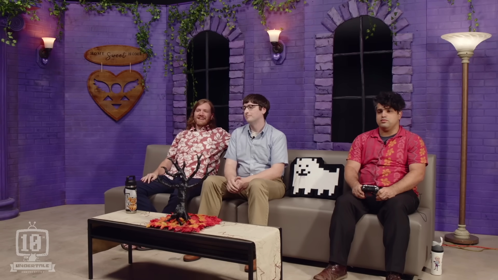
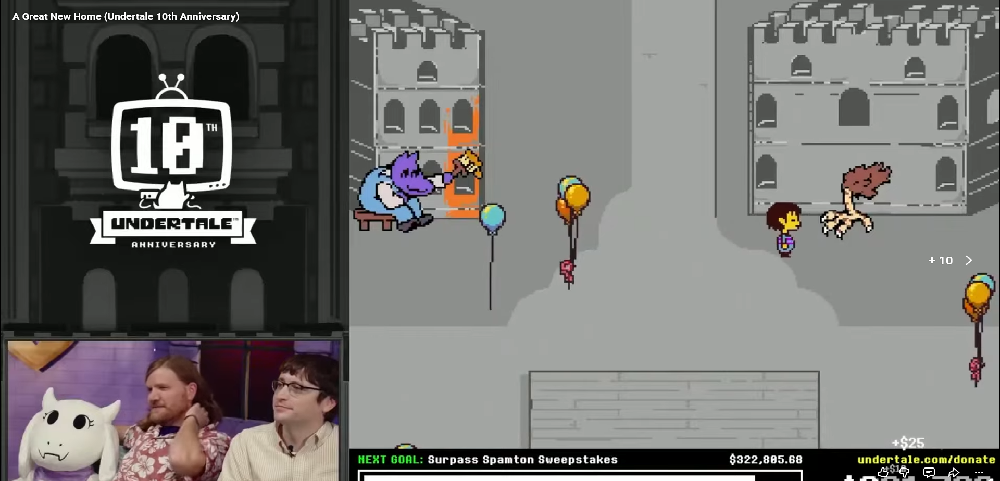

La wiki organizza bene la cosa: lo stream e' un evento charity con una build modificata di Undertale, piena di incentivi, commenti di sviluppo, nuove aree, NPC, live action e materiale musicale. Il risultato somiglia meno a una retrospettiva e piu' a un piccolo museo interattivo costruito sopra il gioco originale.

{kind=link}
La zona urbana dietro le Rovine diventa esplorabile. La wiki la tratta come Old Home, un nome che la mette subito accanto a New Home e cambia il peso di quella vecchia skyline: dietro al fondale c'era memoria storica.

La wiki nota che Noelle non viene nemmeno interagita durante lo stream, ed e' forse proprio questo il bello: sta li', in Snowdin, come conferma silenziosa che la famiglia Holiday ha un'ombra anche nel mondo di Undertale.

La porta che normalmente porta verso `room_mysteryman` viene sostituita da una porta marrone che ricorda quella della stanza di Sans. I conduttori la ignorano; quando l'area viene rivisitata nell'epilogo, il corridoio non c'e' piu'.

Dopo l'incentivo dedicato, appare un nuovo percorso prima del Last Corridor. La zona porta a una versione popolata e in scala di grigi di Home, con uno stage per il Nose-Nuzzling. E' una sciocchezza tenerissima, e riempie un luogo che nel gioco base era quasi tutto memoria e silenzio.

A Old Home Gerson parla di storia cambiata, pagine levigate, amicizie spezzate e rapporti fra umani e mostri molto meno netti di quanto sembrasse. Per Deltarune e' oro: Gerson e' gia' collegato alle storie riscritte, e qui Undertale stesso sembra ammettere che il passato ufficiale e' stato sistemato da qualcuno.

Gli incentivi charity trasformano Sans in una specie di gag meccanica: prima la richiesta di un combattimento, poi la versione "go all out" che scivola invece verso un gesto gentile e una prank. E' molto Sans: la community chiede la boss fight, lui trova un modo per farci ridere e abbassare l'arma.
Il nuovo dialogo durante il SAVE di Asriel insiste sul tempo che passa, sugli anni che allontanano le persone amate e sulla paura di crescere senza qualcuno accanto. Dentro un evento del decimo anniversario e' una botta piuttosto precisa: Toby usa la nostalgia, poi la gira dalla parte della perdita.
La live action di Day 1 porta Spamton nella stanza fisica: entra, infila un disco nella TV, prende il controllo del gioco e sostituisce Sans da Grillby's. E' una gag enorme, ma anche un promemoria: dopo Deltarune, Undertale diventa un oggetto piu' contaminabile. I due mondi si sporcano a vicenda.
Hotland High, il Dog Hole da cento piani, il nuovo NPC "you should knock" nel True Lab, Omega Flowey con facce inutilizzate, remix e nuove musiche: la parte piu' bella dell'evento e' che mischia prototipo, joke e lore nello stesso spazio. Sembra davvero un archivio vivo del modo in cui Toby pensa i suoi giochi.
Il decimo anniversario sembra dire una cosa semplice: il mondo e' piu' grande di quello che abbiamo esplorato, e la storia che conosciamo potrebbe essere solo una versione comoda.
Per arrivare al Capitolo 5, questa e' benzina pura: fiori, vecchie case, memorie sepolte, storie riscritte e un confine Undertale / Deltarune sempre meno tranquillo. Piu' che una risposta, sembra una nuova soglia.